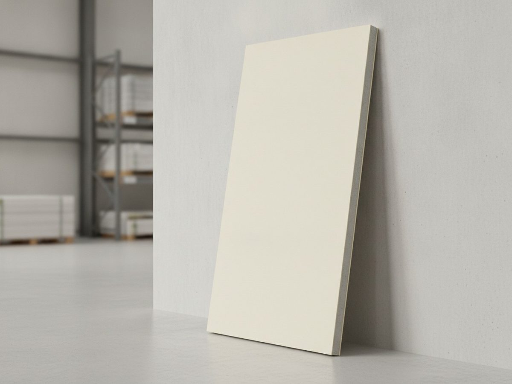
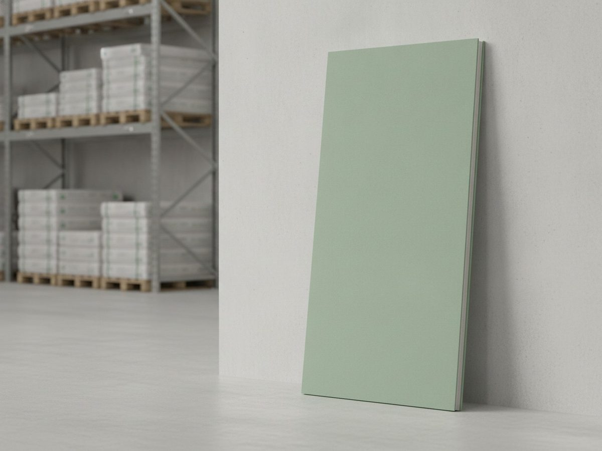
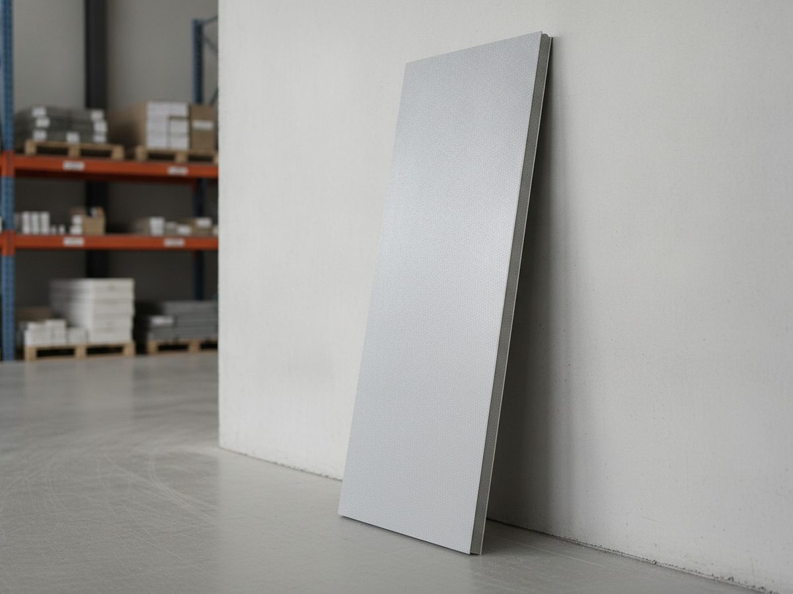
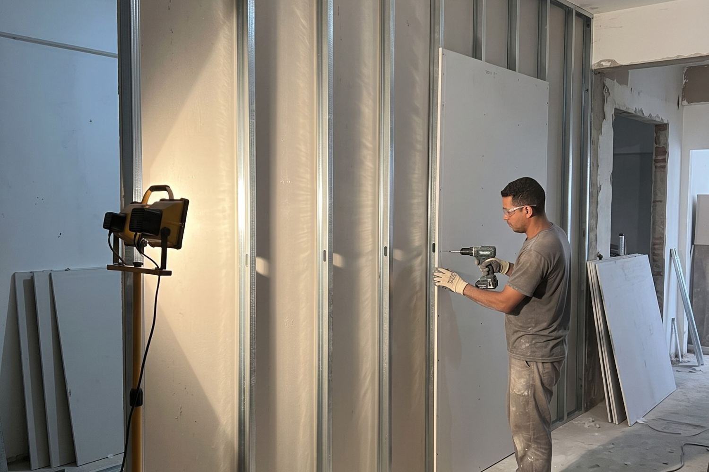
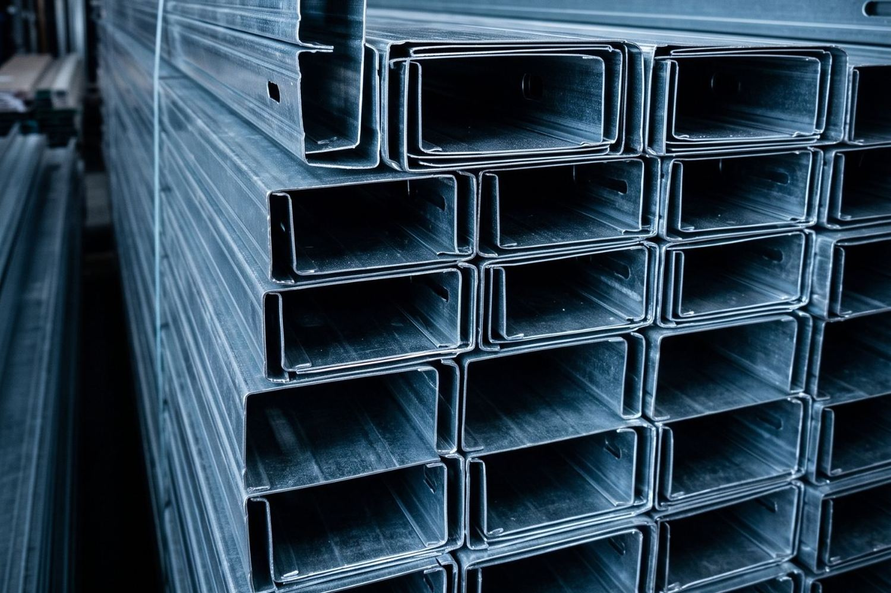
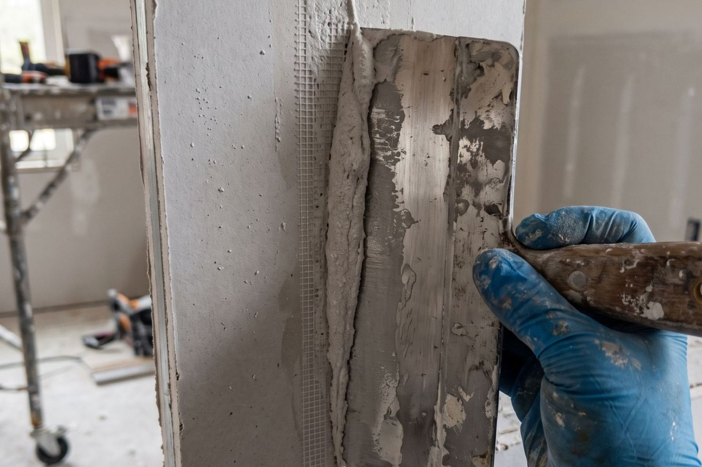
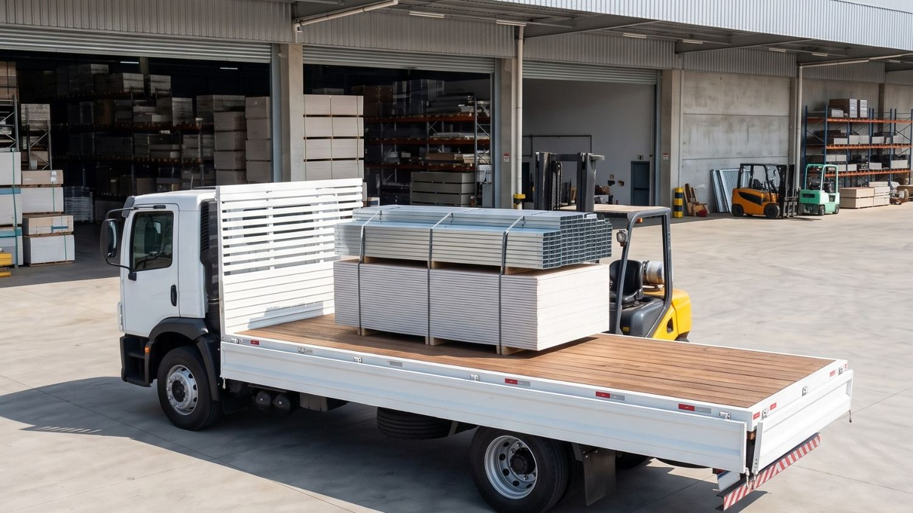

01
Linha incompleta
A placa está lá, mas falta o F530. Acha o montante, mas não tem a fita telada. O pedido vira três fornecedores, três notas e três conferências de recebimento para fechar um serviço só.
Placa ST, placa RU, Glasroc X, guia, montante, perfil F530, tabica, cantoneira, parafuso, fita telada, massa e acessórios. Quinze itens da mesma linha, com um vendedor técnico que sabe qual placa serve para cada aplicação.
1987
Grupo Vocical distribui material de construção desde
2005
Robracon em operação em Mato Grosso desde
11
Unidades do grupo em São Paulo e Mato Grosso
3
Unidades Robracon no estado de Mato Grosso
15
Itens de drywall na linha, da placa ao prego
Quem trabalha com construção a seco em Mato Grosso conhece os quatro de sempre. Nenhum deles é sobre o preço da placa.
01
A placa está lá, mas falta o F530. Acha o montante, mas não tem a fita telada. O pedido vira três fornecedores, três notas e três conferências de recebimento para fechar um serviço só.
02
Quem não conhece o produto não sabe dizer se a aplicação pede ST, RU ou Glasroc X. A especificação errada só aparece depois, quando a parede já está fechada e a reposição sai do bolso de alguém.
03
Quem monta estoque conforme a demanda aparece não sustenta reposição. Para revenda, isso é pior ainda: você perde a venda no balcão por um item que o seu fornecedor deixou de trabalhar.
04
Calcular placa, perfil, parafuso, fita e massa no olho é onde nasce a sobra parada no estoque e a falta que interrompe a montagem. Contar certo é trabalho técnico, não é chute de vendedor.
Evite parar o serviço por falta de material. Solicite sua cotação.
Solicitar orçamentoÉ a linha de drywall mais completa do Grupo Vocical, concentrada na unidade de Rondonópolis e com atendimento comercial também em Cuiabá e Sinop.
Standard, para paredes e forros em áreas secas.
Resistente à umidade, para área úmida.
Revestimento em fibra de vidro, para área externa.
Perfil que corre no piso e no teto, dando o alinhamento.
Perfil vertical da estrutura, em 48, 70 e 90 mm.
Estrutura do forro, fixada por presilha e regulador.
Acabamento do perímetro do forro, com junta aparente.
Proteção de canto, evita quebra e desalinhamento.
Ponta agulha para placa e metal-metal para perfil.
Tratamento de junta entre placas, antes da massa.
Massa para drywall, para junta e acabamento.
Prende o perfil do forro ao pendural.
Ajusta a altura e o nível do forro na montagem.
Amarração e apoio na montagem da estrutura.
Fixação complementar da estrutura.
A linha completa fica na Robracon Rondonópolis. Cuiabá e Sinop atendem drywall pelo comercial, e a disponibilidade de cada item é confirmada pelo vendedor na hora do orçamento.
Já tem sua lista de materiais? Envie para a nossa equipe e receba sua cotação.
Solicitar orçamentoA maior parte do retrabalho em drywall nasce aqui, na escolha da placa. As três trabalham em situações diferentes e não se substituem entre si.

Área seca. Paredes e forros internos.
Como reconhecerPapel de cor clara.

Ambientes sujeitos à umidade.
Como reconhecerPapel de cor verde.

Fechamentos externos e áreas expostas.
Como reconhecerSuperfície em manta de fibra de vidro, sem papel.
Não sabe qual usar? O nosso vendedor técnico ajuda a especificar.
Fale com um vendedor| Característica | Placa ST | Placa RU | Glasroc X |
|---|---|---|---|
| O que é | Placa standard, de uso geral. | Placa com aditivo hidrofugante no núcleo. | Placa com revestimento em fibra de vidro, sem papel na superfície. |
| Como identificar | Papel de cor clara. | Papel de cor verde. | Superfície em manta de fibra de vidro. |
| Onde entra | Paredes e forros internos de ambiente seco: quarto, sala, corredor, escritório, loja. | Ambiente sujeito a respingo e vapor: cozinha, banheiro, área de serviço, vestiário. | Fechamento externo e área exposta a intempérie, como fachada e beiral. |
| Onde não entra | Qualquer ambiente com respingo, vapor constante ou exposição externa. | Exposição direta e contínua a chuva, e imersão em água. | Não é elemento estrutural e não substitui alvenaria portante. |
| Erro mais comum | Usar ST em banheiro para economizar na placa e refazer a parede depois. | Achar que RU é impermeável. Ela resiste à umidade, não à água corrente. | Especificar ST ou RU em fachada, onde só a placa de fibra de vidro trabalha. |
| Medida usual | 1,20 m de largura, 1,80 m e 2,40 m de altura. | 1,20 m de largura, 1,80 m e 2,40 m de altura. | 1,20 m de largura, conforme a linha do fabricante. |
As espessuras, medidas e linhas disponíveis variam por fabricante e por lote. O vendedor técnico da Robracon confirma a especificação exata antes de fechar o pedido.
Montantes a cada 0,60 m.

Placa é o que aparece. O que segura o serviço é o perfil certo, na bitola certa, no espaçamento certo.

| Perfil | Função | Onde entra | O que observar |
|---|---|---|---|
| Guia | Dá o alinhamento da parede e recebe as pontas dos montantes. | Fixada no piso e no teto, ao longo de todo o comprimento da parede. | O consumo é o dobro do comprimento da parede, porque são duas linhas. |
| Montante 48 mm | Estrutura vertical de parede. | Divisória interna leve, com pé-direito menor e sem carga pendurada. | É o perfil mais econômico e o mais limitado em altura e em carga. |
| Montante 70 mm | Estrutura vertical de parede. | Uso mais comum em divisória interna, inclusive com passagem de instalação. | Ganha rigidez e espaço interno em relação ao 48 mm. |
| Montante 90 mm | Estrutura vertical de parede. | Pé-direito maior, parede mais alta, mais isolamento ou instalação mais grossa. | É o perfil indicado quando a altura ou a carga sobem. |
| Perfil F530 | Estrutura do forro. | Forro de drywall, suspenso na laje por pendural, presilha e regulador. | Não é perfil de parede. Trocar F530 por montante no forro é erro clássico. |
| Tabica | Acabamento do encontro do forro com a parede. | Perímetro do forro, quando o projeto pede junta aparente ou sombra. | Define o acabamento da borda. O consumo sai do perímetro, não da área. |
| Cantoneira | Proteção e alinhamento de canto. | Quinas externas de parede e encontros de placa. | É o que evita a quina amassada e o canto torto no acabamento. |
O espaçamento entre montantes mais usado é 0,60 m. Projeto, altura e revestimento previsto podem pedir 0,40 m. A especificação final é do projetista ou do responsável técnico do serviço.
Referência de consumo para montar um orçamento inicial sem chutar. A quantidade final depende do projeto, do pé-direito, do espaçamento adotado e da perda de cada serviço.
| Item | Parede, por m² de parede | Forro, por m² de forro |
|---|---|---|
| Placa de drywall | 2,0 m² de placa, porque a parede é fechada dos dois lados | 1,0 m² de placa |
| Montante | cerca de 2,0 m, com espaçamento de 0,60 m | não se aplica |
| Guia | cerca de 0,7 m | não se aplica |
| Perfil F530 | não se aplica | cerca de 2,1 m |
| Presilha e regulador | não se aplica | cerca de 2 conjuntos |
| Parafuso ponta agulha 25 mm | cerca de 28 unidades | cerca de 15 unidades |
| Parafuso metal-metal 13 mm | cerca de 6 unidades | conforme a montagem |
| Fita telada | cerca de 2,4 m | cerca de 1,5 m |
| Massa para drywall | cerca de 0,8 kg | cerca de 0,5 kg |
| Tabica ou cantoneira | conforme as quinas | conforme o perímetro do forro |
Valores de referência de mercado para estimativa, não substituem o projeto nem o memorial do fabricante. Some a perda do seu serviço, em geral algo em torno de 10 por cento, e confirme o quantitativo com o vendedor técnico antes de fechar o pedido.

Coloque as medidas e veja a lista de material item a item. No fim, dá para mandar a lista inteira junto com o seu pedido de orçamento.
Estimativa de material
0placas
Preencha as medidas para ver a lista de material.
Estimativa para orientar o orçamento. Não substitui o projeto nem o memorial do fabricante. O vendedor técnico confere a especificação e o quantitativo antes do pedido.
01
Preenche o formulário com nome, contato e cidade. Se já usou a calculadora, a lista de material vai junto.
02
O atendimento é de quem conhece a linha e sabe a diferença entre ST, RU e Glasroc X, não de quem só repassa preço.
03
Preço conforme o volume, condição de pagamento e a disponibilidade real de cada item do seu pedido.
04
Você acerta com o vendedor como o material vai chegar até você, com a programação combinada antes de fechar.
O atendimento é B2B e consultivo. Se você se identifica com dois itens de qualquer uma das listas abaixo, o orçamento vale a pena.

.png) Robracon Rondonópolis, MT
Robracon Rondonópolis, MT
A Robracon é uma unidade do Grupo Vocical. O grupo distribui materiais de construção desde 1987, quando começou em Votuporanga, no interior de São Paulo, com cimento e cal, e foi agregando aço, drywall e coberturas ao portfólio.
A Robracon Rondonópolis foi constituída em 2004 e iniciou as atividades em 2005. Hoje é a unidade de portfólio mais amplo do grupo, atendendo revendas, construtoras, indústrias, serralherias e estruturas metálicas, e é a que reúne a linha completa de drywall.
Fabricantes que abastecem as diferentes linhas de produto. A marca de cada item do seu pedido é confirmada no orçamento.

Endereço: Av. Josefa Machado de Rezende, 2999, Parque Sagrada Família, Rondonópolis, MT
Telefone: (66) 3422-8878
E-mail: vendas.robracon@grupovocical.com.br
Unidade matriz da Robracon e a que concentra a linha completa de drywall, de placa a acessório.
Solicitar orçamentoEndereço: Rua B, 818, Distrito Industrial, Cuiabá, MT
Telefone: (65) 3666-0332
E-mail: vendas.robracon@grupovocical.com.br
Atende pedidos de drywall pelo comercial. A disponibilidade de cada item e a forma de retirada ou entrega são combinadas com o vendedor.
Solicitar orçamentoEndereço: R. João Pedro Moreira de Carvalho, 2357, Jardim Jacarandás, Sinop, MT
Telefone: (66) 3029-9659
E-mail: vendas.robracon@grupovocical.com.br
Atende pedidos de drywall pelo comercial. A disponibilidade de cada item e a forma de retirada ou entrega são combinadas com o vendedor.
Solicitar orçamentoDrywall é uma das cinco linhas da Robracon. Para quem revende ou compra em volume, concentrar o pedido reduz fornecedor, nota e conferência.
Sim. A Robracon fornece sistemas drywall em Mato Grosso, com a linha completa concentrada na unidade de Rondonópolis e atendimento comercial também em Cuiabá e Sinop. É a linha mais completa de drywall do Grupo Vocical.
A linha tem 15 itens: placa ST, placa RU, Glasroc X, guia, montante, perfil F530, tabica, cantoneira, parafuso, fita telada, massa para drywall, presilha, regulador, arame e prego. A ideia é fechar a lista inteira em um fornecedor só.
A placa ST é a standard, para paredes e forros em ambiente seco. A placa RU tem aditivo hidrofugante e é usada onde existe umidade, como cozinha, banheiro e área de serviço. O Glasroc X tem revestimento em fibra de vidro no lugar do papel e é a placa para fechamento externo e área exposta a intempérie.
As três não se substituem entre si. Usar ST em banheiro ou em fachada é o erro de especificação mais comum e o que mais gera retrabalho.
A placa RU, que é a resistente à umidade, identificada pelo papel verde. Vale lembrar que ela resiste à umidade do ambiente, e não a água corrente ou imersão: a área do box continua pedindo o tratamento impermeabilizante previsto em projeto.
O Glasroc X, que tem a superfície em fibra de vidro e foi feito para exposição externa. Placa ST e placa RU não são indicadas para fachada.
Como a parede de drywall é fechada dos dois lados, cada metro quadrado de parede consome cerca de 2 metros quadrados de placa. Se o projeto pedir chapeamento duplo, esse número dobra para 4 metros quadrados por metro quadrado de parede.
A calculadora desta página faz essa conta junto com perfis, parafusos, fita e massa a partir das medidas reais.
É a largura do perfil, que define a espessura da parede, a rigidez e o espaço interno para instalações. O 48 mm atende divisória leve de pé-direito menor, o 70 mm é o mais usado em divisória interna e o 90 mm entra quando a parede é mais alta, leva mais isolamento ou recebe instalação mais grossa.
O F530 é o perfil de estruturação de forro. Ele é suspenso na laje por pendural, presilha e regulador, e recebe a placa por baixo. Não é perfil de parede: trocar F530 por montante no forro é um erro clássico de compra.
A linha inteira. Placa, perfil, parafuso, fita telada, massa, presilha, regulador, tabica, cantoneira, arame e prego saem do mesmo pedido, o que evita fechar a compra em três fornecedores diferentes.
A Robracon tem três unidades no estado: Rondonópolis, Cuiabá e Sinop. A linha completa de drywall está em Rondonópolis. Cuiabá e Sinop atendem drywall pelo comercial, e a disponibilidade de cada item é confirmada pelo vendedor no orçamento.
Direto com o vendedor, antes de fechar o pedido. A forma de retirada ou de entrega e a programação são combinadas caso a caso, conforme a unidade, o volume e o item.
O atendimento é preparado para B2B: revendas, construtoras, indústrias e prestadores de serviço que compram em volume. Fale com o vendedor para confirmar a sua situação.
Varia conforme o volume. Quanto maior a compra, melhor a condição negociada. O preço e a forma de pagamento saem no orçamento, junto com a disponibilidade dos itens.
Sim. Esta página tem uma calculadora que estima placas, perfis, parafusos, fita e massa a partir das medidas, e o vendedor técnico confere o quantitativo antes de fechar o pedido. É um apoio de orçamento, não substitui o projeto.
Sim. Revenda de material de construção é o perfil principal de cliente do Grupo Vocical, que atua como distribuidor desde 1987.
Sim. O atendimento é consultivo e preparado para construtoras, incorporadoras, indústrias e órgãos públicos, com apoio no quantitativo e condição conforme a escala da compra.
Sim. São cinco linhas: material de construção, aço para construção civil, estruturais e serralheria, coberturas e drywall. A unidade de Rondonópolis também faz corte e dobra de chapas e produz telhas metálicas e termoacústicas em comprimento personalizado.
O Grupo Vocical distribui materiais de construção desde 1987, quando começou em Votuporanga, São Paulo, com cimento e cal. Hoje são 11 unidades em São Paulo e Mato Grosso, sob as marcas Vocical, Jacical, Ello Forte, Rio Preto Cimento e Cal, Robracon e as distribuidoras de Itu, Piracicaba e Itapetininga.
Para quem compra, revende ou orça e precisa falar a mesma língua do vendedor.
Diga o que você precisa e a sua cidade. O contato vai para um vendedor da Robracon que conhece a linha e consegue conferir a especificação com você.
ROBRACON RONDONÓPOLIS BRASIL MATERIAIS P/ CONSTRUÇÃO LTDA · CNPJ 06.937.383/0001-05
Av. Josefa Machado de Rezende, 2999, Parque Sagrada Família, Rondonópolis, MT · (66) 3422-8878